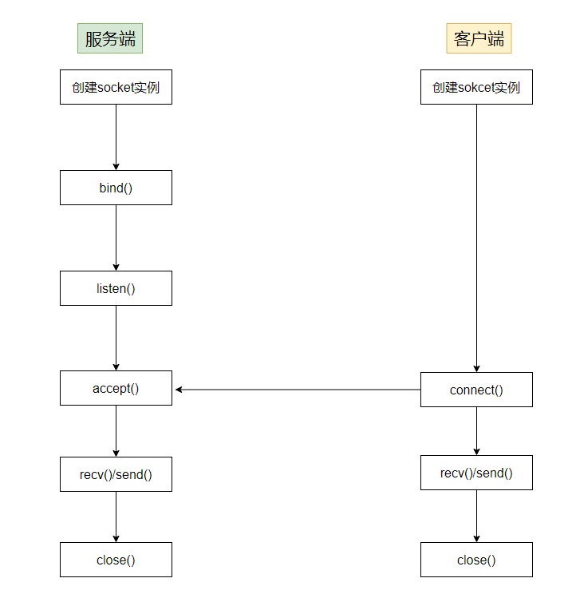

04 网络编程
Linux网络编程
网络编程实际上就是在应用层调用Socket相关的系统调用，Socket是操作系统内核向应用层提供的一种进程间通信机制，它使得相同/不同主机上的进程可以都进行通信。两个进程通过Socket连接后，实际上就相当于到了OSI模型的传输层
除了Socket之外，在应用层可能还会使用一些更为高级的网络编程接口，比如http，websocket等，这些接口实际上都是对Socket接口的一种更高级别的封装
Linux的Socket库本身并没有客户端、服务器的概念，我们通常是根据某个进程使用Socket的具体行为来把它定为客户端或服务器的
在进行网络编程时，需要建立连接的每个进程内都需要创建一个
Socket对象，且建立连接时会得到一个新的Socket对象从类的思想看
Socket，其包括IP地址、所使用协议等属性；包括绑定IP地址、进入监听状态，发起连接，建立连接等行为，即是一个封装了网络相关操作的一个类
1.系统调用
1.1创建套接字对象
socket()函数与open()函数类似，如果成功则返回一个文件描述符，该描述符被后续操作所使用
创建Socket对象时，在Linux内核中实际上也会在VFS创建一个struct file文件对象，同时这个实例是sokcet类型的
1 |
|
1.domain 参数 (协议族/地址族)
该参数指定套接字所使用的协议族或地址族，决定了套接字使用的通信协议。常用的选项包括：
AF_INET：IPv4 网络协议AF_INET6：IPv6 网络协议AF_UNIX/AF_LOCAL：本地通信（也称作 UNIX 域套接字，适用于同一台机器上的进程间通信）AF_PACKET：用于直接访问底层网络设备
2.type 参数 (套接字类型)
该参数指定套接字的类型，决定了如何传输数据。常用的选项包括：
SOCK_STREAM：面向连接的字节流套接字（通常用于 TCP）SOCK_DGRAM：无连接的数据报套接字（通常用于 UDP）SOCK_RAW：原始套接字，允许程序访问低层协议SOCK_SEQPACKET：有序且可靠的数据包交付（类似SOCK_STREAM但对每个数据块保持边界）
3.protocol 参数 (具体协议)
该参数指定应使用的协议。==通常，这个参数被设为 0，意味着选择默认协议==。如果你明确想要指定协议，则可以选择：
IPPROTO_TCP：表示 TCP 协议IPPROTO_UDP：表示 UDP 协议IPPROTO_ICMP：表示 ICMP 协议IPPROTO_RAW：使用自定义协议，常用于SOCK_RAW类型的套接字
在多数情况下，将该参数设置为 0 就会选择默认的协议。例如，如果 domain 是 AF_INET 且 type 是 SOCK_STREAM，则 protocol 为 0 会选择 TCP
1.2绑定IP及端口
通常使用bind()系统调用将创建的一个套接字绑定到指定的IP和端口
1 | int bind(int sockfd, const struct sockaddr *addr, socklen_t addrlen); |
sockfd：某个套接字对象的文件描述符bind()函数不是总需要被调用的：一般来讲，会将一个服务器的套接字绑定到一个固定的IP地址，即一个要与服务器通信的客户端事先就知道了服务器的IP地址。如果不绑定IP地址和端口，则程序可以依赖内核的自动选址机制来自动完成地址的选择，通常客户端程序会这样做
1.3监听
只有服务端需要进入监听状态，等待客户端的连接请求，进入监听状态所使用的函数如下：
1 | int listen(int sockfd, int backlog); |
sockfd：某个套接字对象的文件描述符backlog：请求队列的长度
listen()函数需要在bind()函数之后被调用，在accept()函数之前被调用。
无法在一个已经连接的套接字（即已经成功执行 connect()的套接字或由 accept()调用返回的套接字）上执行 listen()
1.4等待连接请求
服务器在进入监听状态后，等待客户端的连接请求，使用accept()函数可以获取客户端的连接请求并建立连接，其原型如下==(只有服务器才能调用)==：
1 | int accept(int sockfd, struct sockaddr *addr, socklen_t *addrlen); |
如果调用
accept()函数时，服务器并没有收到客户端的连接请求，则服务器进程将进入阻塞态，直到收到客户端的请求为止在成功建立连接后，
accept()函数将创建一个新的套接字对象并返回一个新的网络文件描述符，这个文件描述符和Socket()返回的不一样，Socket()返回的是服务器（以服务器为例）的套接字的文件描述符，而accept()函数返回套接字连接到调用connet()的客户端，服务器通过这个新的套接字与客户端进行交互
1.5请求连接
客户端需要与远程的服务器建立连接以获取资源，其所使用的函数如下：
1 | int connect(int sockfd, const struct sockaddr *addr, socklen_t addrlen); |
- 成功调用返回0，否则返回-1
客户端通过 connect()函数请求与服务器建立连接
- 对于TCP来说，调用该函数将发生TCP的3次握手过程，并最终建立一个TCP连接
- 对于UDP来说，调用这个函数只是在
sockfd中记录服务器IP地址与端口号，而不发送任何数据
1.6发送和接收数据
一旦客户端与服务器建立好连接后，就可以使用套接字描述符来收发数据了，客户端需要使用socket()返回的描述符，服务器需要使用accept()返回的描述符
- 接收数据：可以使用
read()函数或者recv()函数，后者可以设置一些标志位来控制如何接受数据 - 发送数据：可以使用
write()函数或者send()函数，后者可以设置一些标志位来控制如何发送数据
在进行I/O操作时，可能会使进程进入阻塞态
1.7关闭套接字
使用close()函数可以关闭套接字，并释放相应资源
1.8使用流程
综上所述，服务端和客户端使用的API其实是有所不同的，看下图总结：
1.9服务端示例代码
1 |
|
1.10客户端示例代码
1 |
|
2.地址转换API
在网络编程时，除了要使用一些系统调用，还有一些C的库函数可以使用，主要用在地址转换方面：
常见的 IP 地址转换 API 包括：
1.inet_pton()
- 用于将文本形式的 IP 地址（如
"192.168.1.1"）转换为二进制格式（如struct in_addr或struct in6_addr）。 pton代表“presentation to network”（表示形式到网络形式）。
2.inet_ntop()
- 将二进制格式的 IP 地址（如
struct in_addr或struct in6_addr）转换为文本形式（如"192.168.1.1"）。 ntop代表“network to presentation”（网络形式到表示形式）。
3.inet_addr() 和 inet_aton()
- 这些函数将文本形式的 IPv4 地址转换为网络字节序的二进制格式。
inet_addr()返回一个in_addr_t类型的整数，而inet_aton()则将结果存储在struct in_addr中
4.gethostbyname() 和 gethostbyaddr()
- 这些函数用于将主机名（如
www.example.com）转换为 IP 地址，或将 IP 地址转换为主机名。